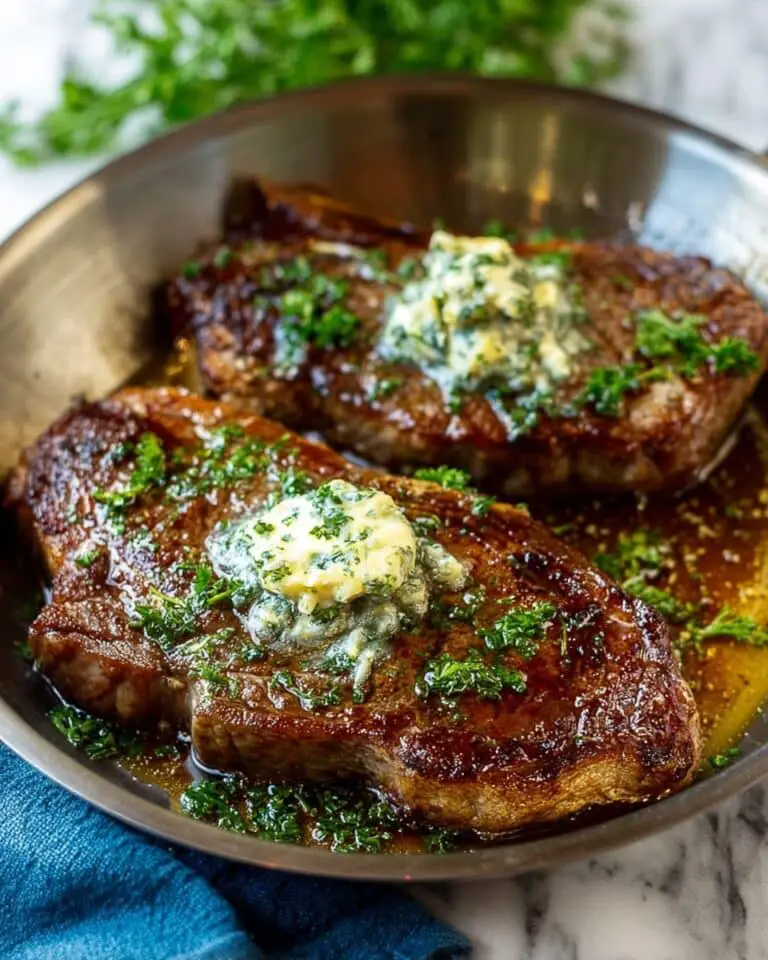

This sirloin steak recipe is served with very garlicky butter that makes this steak melt
in your mouth wonderful! You will never taste any other steak that came even close to this recipe!
If you are craving a steak that bursts with rich flavour and buttery goodness, then the Sirloin
steak with Garlic butter recipe is your new best friend in the kitchen. Thic dish pairs creamy, garlicky
butter with tender, perfectly grilled sirloin steaks that are juicy. Every bite is a celebration of bold
garlic infused with the savoury depth of beef, making it impossible not to fall in love with this
incredible recipe. Whether you're cooking for a crowd or a special dinner, this sirloin steak recipe
promises a dazzling, restaurant-quality experience at the comfort of your home.